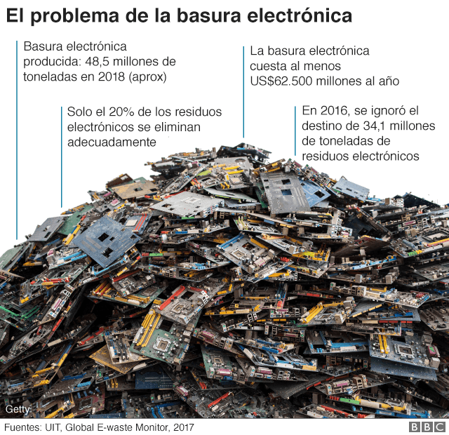

GREENCOMPUTING
¿QUE ES EL GREENCOMPUTING?
Green Computing también conocido como Green IT o traducido al español
como Tecnologías Verdes se refiere al uso eficiente
de los recursos computacionales minimizando el impacto ambiental.
Cerca de la mitad de toda la basura electrónica está formada por dispositivos personales, como computadoras, pantallas, smartphones, tabletas y televisores.
El resto está compuesto por electrodomésticos más grandes, además de equipos de calefacción y aire acondicionado.
Un teléfono inteligente promedio contiene hasta 60 elementos, que principalmente son metales pesados que son muy valorados en la industria electrónica por su alta conductividad.
“Según un informe de la Organización de las Naciones Unidas (ONU), el mundo generó 48,5
millones de toneladas de basura electrónica en 2018. Este dato pone de manifiesto la creciente importancia del reciclaje,
que también arroja cifras preocupantes: solo el 20% de estos residuos se recicla. De mantenerse estas tendencias,
la ONU estima que podríamos alcanzar los 120 millones de toneladas de chatarra electrónica en 2050. “

RAZONES PARA RECICLAR
Los equipos obsoletos o de otros aparatos electrónicos son una importante fuente de materias primas secundarias, si se tratan adecuadamente por eso es importante depositarlos en puntos limpios o empresas de reciclajes, si no, son una fuente de toxinas, carcinógenos y por supuesto contaminantes para el medio ambiente.
Muchos materiales utilizados en la fabricación de equipos informáticos pueden ser recuperados en el proceso de reciclado para su uso en futuras fabricaciones.
Reutilización de estaño, el silicio, hierro, aluminio, y una variedad de plásticos - todos ellos presentes en grandes cantidades en las computadoras u otros aparatos electrónicos. Se puede reducir los costes de la construcción de nuevos sistemas. Además, los componentes con frecuencia contienen cobre, oro y otros materiales valiosos.
Otros componentes de los ordenadores contienen elementos valiosos y las sustancias adecuadas para la recuperación, incluyendo el plomo, el cobre y el oro. También contienen muchas sustancias tóxicas, como dioxinas, bifenilos policlorados (PCB), el cadmio, el cromo, los isótopos radiactivos, y el mercurio. Un monitor de la computadora típica puede contener más de 6% de plomo en peso, muchos de los cuales se encuentra en el vidrio de plomo de los tubos de rayos catódicos (CRT).

¿QUE HACER?
Rehusó: Utiliza las partes o componentes de otros sistemas para mejorar el
propio. Crea productos nuevos usando las partes que no se puedan usar según el
diseño original; puede crear libretas, carpetas y joyería.
Reducción: Considera alquilar o mejorar computadoras en vez de comprar
nuevas. Comparte la computadora propia y compra sólo el equipo que necesita.
Donación: : Dona el equipo a un vecino, a escuelas, a caridades o a cualquier otra
persona o entidad que necesite el mismo. El donar los equipos que no utilicemos a las escuelas
ayudará a cerrar la brecha entre lo social y lo digital en los chicos que no tengan los recursos
para poder costearse una computadora.
Reciclaje (desmanufacturación): Luego de desmontar el equipo, el metal, el
plástico y el vidrio se procesan para ser rehusados. No descarta computadoras
que no se puedan reparar o componentes que no se necesiten, sino que los lleva
a los centros de acopio. Sin embargo, es la alternativa más cara.